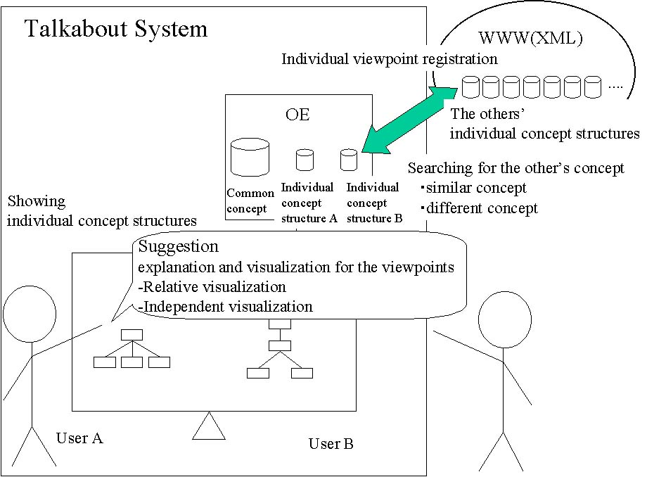
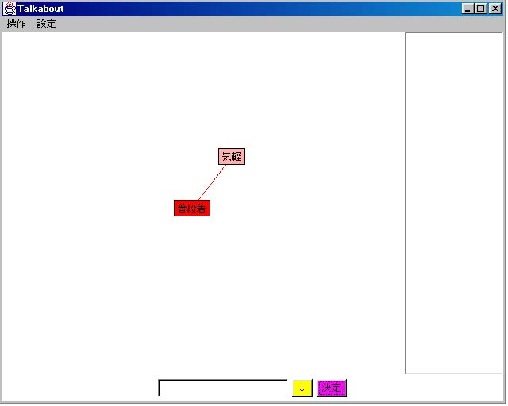

Talkabout :
A System for Supporting Cooperative Consensus Formation via Ontologies
We propose the Talkabout system to support the nebulous communication between the users who do not clearly express the concepts intended.
When people find difficulty in mutual understanding, the system will ask each of them to build an ontology of the common target world, with some help functions, and then compares the ontologies built, and facilitating the discussion on the similarity and/or differences between them.
This in turn should lead to a consensus or, at least, to a better understanding of why they cannot come to an agreement.
This is achieved by indicating the conceptual differences between the users through the users' direct creation of the concepts as ontologies and by showing other concepts obtained from World Wide Web.
Our long-term goal includes building a support environment for the resolution of misunderstanding, for facilitating creative thinking and for building an agreeable ontology using an ontology as a mediation tool.

